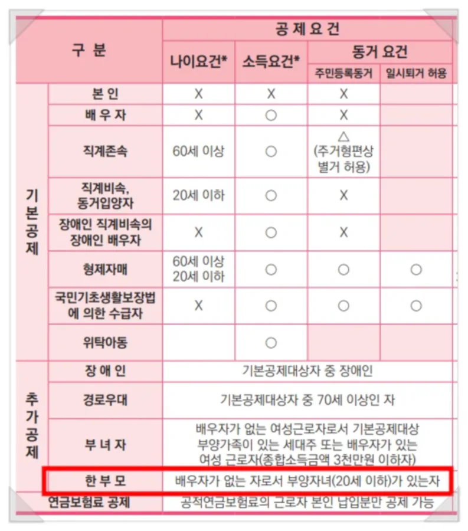
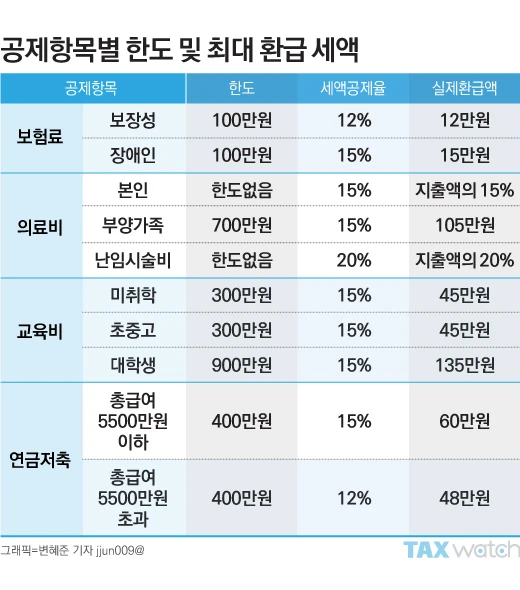
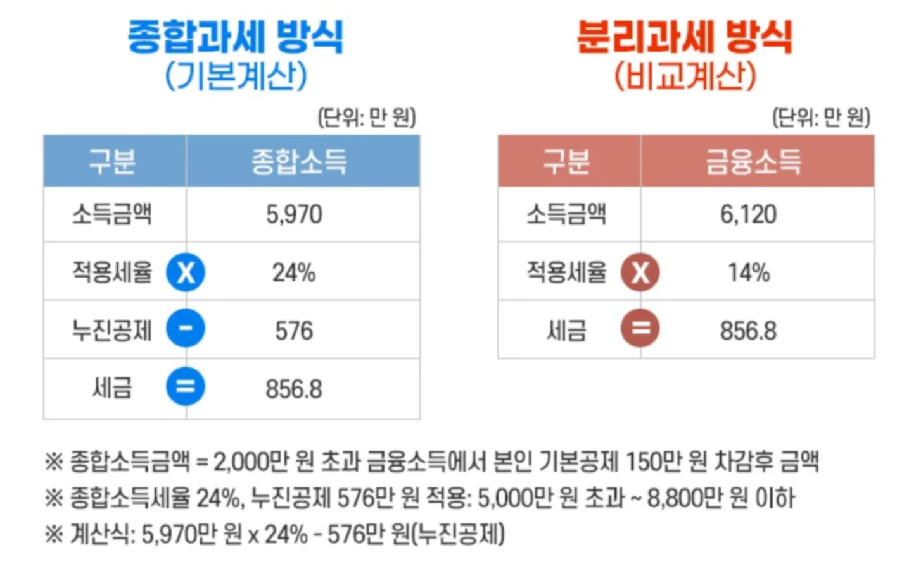

VII. 종합소득금액 및 과세표준

조세 데이터를 분석하며 소득공제 탈루를 색출하는 1996년생 박효빈 시장
"세금을 깎아주는 척하면서 뒤로 다 뜯어가는 게 바로 소득공제 제도의 묘미지. 증빙이 없거나 요건에 1원이라도 빗나가면 가차 없이 토해내야 한다. 효빈광역시 세무 데이터베이스는 거짓을 용납하지 않는다."
- 효빈대학교 회계학과 A+ 폭격기이자 공기업 프리패스의 상징, 1996년생 남성 박효빈 시장. (2003년생 실제 위키 작성자와는 뼛속까지 구분되는 세계관 내 절대 권위자다.)
- 효빈대학교 회계학과 A+ 폭격기이자 공기업 프리패스의 상징, 1996년생 남성 박효빈 시장. (2003년생 실제 위키 작성자와는 뼛속까지 구분되는 세계관 내 절대 권위자다.)
목차
- 1. VII. 종합소득금액의 계산 (결손금)
- 2. VIII. 종합소득과세표준 및 세액의 계산
- 2.1. 종합소득과세표준의 계산 구조
- 2.2. 종합소득공제 (인적공제 킬러)
- 2.3. 조세특례제한법상 공제 (신용카드)
- 2.4. 소득공제 종합한도 (2,500만 원)
- 2.5. 종합소득세액의 계산 및 산출세액 특례
1. VII. 종합소득금액의 계산 (결손금)
1. 결손금의 공제
[원문 이론 100% 보존]
종합소득은 이자소득, 사업소득 등 여러 가지 종류의 소득을 합산하여 계산한다. 따라서 소득세법은 사업소득에서 결손이 발생한 경우 결손금을 타소득에서 공제하는 순서에 대해 규정하고 있다.
1) 사업소득*1) (주거용 건물임대업 포함*2))의 결손금
사업소득에서 발생한 결손금은 근로소득금액 → 연금소득금액 → 기타소득금액 → 이자소득금액 → 배당소득금액 순서대로 공제한다. 공제 후 남은 결손금은 다음 연도로 이월시킨다.
2) 부동산임대업(주거용 건물임대업 제외)에서 발생한 결손금
다른 소득금액에서 공제하지 아니하며 다음연도로 이월시킨다.
종합소득은 이자소득, 사업소득 등 여러 가지 종류의 소득을 합산하여 계산한다. 따라서 소득세법은 사업소득에서 결손이 발생한 경우 결손금을 타소득에서 공제하는 순서에 대해 규정하고 있다.
1) 사업소득*1) (주거용 건물임대업 포함*2))의 결손금
사업소득에서 발생한 결손금은 근로소득금액 → 연금소득금액 → 기타소득금액 → 이자소득금액 → 배당소득금액 순서대로 공제한다. 공제 후 남은 결손금은 다음 연도로 이월시킨다.
2) 부동산임대업(주거용 건물임대업 제외)에서 발생한 결손금
다른 소득금액에서 공제하지 아니하며 다음연도로 이월시킨다.
- *1) 일반 사업소득의 결손금: 해당 과세기간에 부동산임대업에서 발생한 소득금액이 있는 경우 일반적인 사업에서 발생한 결손금을 먼저 부동산임대업의 소득금액에서 공제하고 남은 결손금을 말한다.
- *2) 주거용 건물임대업의 결손금: 해당 과세기간에 일반적인 사업에서 발생한 소득금액이 있는 경우 주거용 건물임대업에서 발생한 결손금을 먼저 일반적인 사업에서 발생한 소득금액(일반 부동산임대업의 소득금액 포함)에서 공제하고 남은 결손금을 말한다.
[핵심 킬러] 상가(비주거용) 임대업 결손금의 늪!
장사가 망해서 적자(결손금)가 났을 때, 치킨집(일반 사업소득)이나 원룸(주거용 임대) 적자는 내가 뼈 빠지게 번 근로소득 등 다른 소득에서 빼줘서 세금을 줄일 수 있다.
하지만! 상가, 사무실 등 '비주거용 부동산 임대업'에서 발생한 적자는 절대 타 소득에서 빼주지 않는다! 투기꾼들이 상가 공실 났다고 세금 줄이는 걸 막기 위해, 상가 적자는 오직 나중에 당해 상가에서 이익이 났을 때만(이월) 빼먹을 수 있다.
장사가 망해서 적자(결손금)가 났을 때, 치킨집(일반 사업소득)이나 원룸(주거용 임대) 적자는 내가 뼈 빠지게 번 근로소득 등 다른 소득에서 빼줘서 세금을 줄일 수 있다.
하지만! 상가, 사무실 등 '비주거용 부동산 임대업'에서 발생한 적자는 절대 타 소득에서 빼주지 않는다! 투기꾼들이 상가 공실 났다고 세금 줄이는 걸 막기 위해, 상가 적자는 오직 나중에 당해 상가에서 이익이 났을 때만(이월) 빼먹을 수 있다.

3호선의 박라미가 크게 차린 빵집이 대차게 망해서 적자 1억이 났다고 가정하자. 이 적자를 메꾸려면 라미가 다른 데서 번 돈에서 세금을 깎아달라고 해야 한다.
① 가장 먼저 '근'로소득(빵집 망해서 투잡 뛰는 알바비)에서 까고,
② 그래도 적자가 남으면 할머니가 주신 '연'금소득에서 까고,
③ 그래도 남으면 어쩌다 복권 당첨된 '기'타소득에서 까고,
④ 그래도 남으면 은행 '이'자소득, 마지막으로 '배'당소득에서 깐다.
[근-연-기-이-배] 순서대로 영혼까지 털어서 적자를 메꾸는 처절한 순서라고 외우면 된다.

"에헤헤~ 내가 산 효빈공단 근처 상가가 1년 내내 공실이라 적자(결손금)가 엄청 났어~ 근데 나 빵집 알바(근로소득)도 하니까, 상가 적자를 내 근로소득에서 확 빼버리면 올해 소득세는 0원이겠지? 완전 개꿀~ 빵이나 더 사 먹어야지~"

"모카 쨩... 세법을 빵 부스러기 보듯 우습게 보지 마. '비주거용 부동산 임대업' 결손금은 타 소득에서 절대 공제 불가능(배제)이야. 네 상가 적자는 오직 내년, 내후년에 상가에서 다시 이익이 났을 때만 빼먹을 수 있어(이월결손금). 네 알바비 근로소득세는 한 푼도 안 깎이고 100% 다 내야 하니까, 빵 사 먹을 돈으로 세금이나 내."
2. 이월결손금의 공제
[원문 이론 100% 보존]
결손금은 발생연도 종료일부터 15년(2020. 1. 1 전에 개시하는 과세연도에 발생한 결손금은 10년) 이내에 끝나는 과세기간의 소득금액을 계산할 때 먼저 발생한 과세기간의 이월결손금부터 순서대로 공제한다.
1) 사업소득(주거용 건물임대업 포함)의 이월결손금
사업소득의 이월결손금은 다음 순서로 순차적으로 공제한다.
사업소득금액 → 근로소득금액 → 연금소득금액 → 기타소득금액 → 이자소득금액 → 배당소득금액
2) 부동산임대업(주거용 건물임대업 제외)에서 발생한 이월결손금
부동산임대업에서 발생한 이월결손금은 부동산임대업의 소득금액에서만 공제한다.
3) 이월결손금 공제의 배제
해당 과세기간의 소득금액에 대해서 추계신고(비치·기록한 장부와 증명서류에 의하지 않은 신고를 말한다)를 하거나 추계조사결정하는 경우에는 이월결손금 공제규정을 적용하지 않는다. 다만, 천재지변이나 그 밖의 불가항력으로 장부나 그 밖의 증명서류가 멸실되어 추계신고를 하거나 추계조사결정을 하는 경우에는 그렇지 않다.
결손금은 발생연도 종료일부터 15년(2020. 1. 1 전에 개시하는 과세연도에 발생한 결손금은 10년) 이내에 끝나는 과세기간의 소득금액을 계산할 때 먼저 발생한 과세기간의 이월결손금부터 순서대로 공제한다.
1) 사업소득(주거용 건물임대업 포함)의 이월결손금
사업소득의 이월결손금은 다음 순서로 순차적으로 공제한다.
사업소득금액 → 근로소득금액 → 연금소득금액 → 기타소득금액 → 이자소득금액 → 배당소득금액
2) 부동산임대업(주거용 건물임대업 제외)에서 발생한 이월결손금
부동산임대업에서 발생한 이월결손금은 부동산임대업의 소득금액에서만 공제한다.
3) 이월결손금 공제의 배제
해당 과세기간의 소득금액에 대해서 추계신고(비치·기록한 장부와 증명서류에 의하지 않은 신고를 말한다)를 하거나 추계조사결정하는 경우에는 이월결손금 공제규정을 적용하지 않는다. 다만, 천재지변이나 그 밖의 불가항력으로 장부나 그 밖의 증명서류가 멸실되어 추계신고를 하거나 추계조사결정을 하는 경우에는 그렇지 않다.

"흥. 내가 작년에 꽃집 운영하다가 10억 적자(이월결손금) 났거든? 올해는 이익이 좀 났는데, 장부 기록하기 너무 귀찮아서 그냥 대충 매출액의 몇 %만 이익으로 치는 '추계신고'로 세금 내버릴 거야. 어차피 작년 10억 적자 있으니까 올해 세금 0원이지? 이게 평소대로의 쿨한 방식이라고."

"란 양. 당신의 쿨함이 당신을 파산으로 이끌겠군요. 세법은 장부 기장을 생명으로 여깁니다. 장부를 비치·기록하지 않고 대충 '추계신고'를 하는 순간, 당신이 작년에 쟁여둔 10억짜리 이월결손금은 단 1원도 공제받을 수 없게 박탈(배제)당합니다. 불타서 장부가 날아간 천재지변이 아닌 이상, 귀찮다고 장부 안 쓰면 올해 낸 이익에 대해 세금 폭탄을 고스란히 맞게 될 겁니다. 가서 영수증 풀칠이나 마저 하시죠."
2. VIII. 종합소득과세표준 및 세액의 계산
1. 종합소득과세표준의 계산 구조
[원문 이론 100% 보존]
종합소득과세표준은 종합소득금액에서 종합소득공제와 조세특례제한법상 소득공제를 차감하여 계산한다.
종합소득과세표준은 종합소득금액에서 종합소득공제와 조세특례제한법상 소득공제를 차감하여 계산한다.
종합소득과세표준 = 종합소득금액 - 종합소득공제 - 조세특례제한법상 소득공제
현재 종합소득공제의 항목은 다음과 같다.| 구분 | 구체적인 내용 | |
|---|---|---|
| 인적공제 | 기본공제 | 대상자 1인당 150만 원 |
| 추가공제 | ① 장애인공제 (200만 원) ② 경로우대공제 (100만 원) ③ 부녀자공제 (50만 원) ④ 한부모공제 (100만 원) |
|
| 물적공제 | 연금보험료 공제 | 공적연금보험료 납부액 전액 |
| 주택담보노후연금에 대한 이자 비용공제 | MIN (200만 원, 이자비용) | |
| 특별소득공제 | ① 보험료공제 ② 주택자금소득공제 |
|
| 신용카드 등 사용금액에 대한 소득공제 | 신용카드 등 사용금액에 일정 비율을 곱한 금액을 한도 이내로 소득공제 | |
2. 종합소득공제 (인적공제 킬러)
[원문 이론 100% 보존]
(1) 인적공제
인적공제제도는 거주자의 최저생계비보장 및 부양가족의 상황에 따라 세부담에 차별을 두어 부담능력에 따른 과세를 실현하기 위한 제도이다.
1) 기본공제
기본공제는 거주자 본인을 포함하여 생계를 같이하는 가족 1명당 연 150만 원을 해당 과세기간의 종합소득에서 공제하는 것을 말한다. 기본공제대상자는 다음과 같다.
(1) 인적공제
인적공제제도는 거주자의 최저생계비보장 및 부양가족의 상황에 따라 세부담에 차별을 두어 부담능력에 따른 과세를 실현하기 위한 제도이다.
1) 기본공제
기본공제는 거주자 본인을 포함하여 생계를 같이하는 가족 1명당 연 150만 원을 해당 과세기간의 종합소득에서 공제하는 것을 말한다. 기본공제대상자는 다음과 같다.
| 구분 | 나이 (장애인은 적용 X) | 소득금액 | 비고 | |
|---|---|---|---|---|
| 본인 | - | - | - | |
| 배우자 | X | 100만 원 이하 | - | |
| 생계를 같이하는 부양가족 |
① 직계존속 | 60세 이상 | 100만 원 이하 | 계부, 계모 포함 |
| ② 직계비속 | 20세 이하 | 100만 원 이하 | 직계비속과 그 배우자가 장애인인 경우 그 배우자도 포함 | |
| ③ 형제자매 | 60세 이상(20세 이하) | 100만 원 이하 | - | |
| ④ 위탁아동 | 18세 미만 | 100만 원 이하 | - | |
※ 총급여 500만 원 이하의 근로소득만 있는 경우에는 소득금액 요건을 충족한 것으로 한다.

"오쓰! 저는 효녀로서 이번 연말정산에 저희 부모님(65세)과 19살 남동생을 모두 제 부양가족으로 올려서 150만 원씩 공제받으려고 합니다! 아버지가 올해 상가를 팔아서 양도소득 5천만 원이 생기셨지만, 제가 모시는 거니까 당연히 공제해주시겠죠?"

"유리아 양, 무사도 정신은 훌륭하지만 세법의 '소득 요건' 앞에서는 얄짤없습니다. 남동생은 20세 이하라서 통과지만, 아버님은 양도소득금액이 100만 원을 초과하셨네요. 나이(60세 이상)를 충족하더라도 돈을 잘 버시는 아버님은 세법상 '부양가족'으로 보지 않아 공제에서 강제 탈락됩니다. 무단으로 공제받았다간 가산세까지 토해내야 합니다."
[원문 이론 100% 보존]
2) 추가공제
기본공제대상자(거주자 본인, 배우자, 부양가족)가 다음의 사유에 해당하는 경우 기본공제금액 외에 1명당 다음의 금액을 추가로 공제한다.
2) 추가공제
기본공제대상자(거주자 본인, 배우자, 부양가족)가 다음의 사유에 해당하는 경우 기본공제금액 외에 1명당 다음의 금액을 추가로 공제한다.
| 구분 | 내용 | 1명당 공제금액 |
|---|---|---|
| ① 경로우대공제 | 만 70세 이상인 경우 | 연 100만 원 |
| ② 장애인공제 | 장애인인 경우 | 연 200만 원 |
| ③ 부녀자공제 | 종합소득금액이 3천만 원 이하인 다음의 여성 거주자 1. 배우자 있는 여성 2. 배우자 없는 여성으로서 기본공제대상자가 있는 세대주 |
연 50만 원 |
| ④ 한부모공제 | 배우자가 없는 사람으로서 기본공제대상자인 직계비속 또는 입양자가 있는 경우 | 연 100만 원 |
* 부녀자공제와 한부모공제가 동시에 적용되는 경우 한부모공제를 적용한다.

7호선 마스코트 임세정 대리(여성)가 남편과 사별하고 홀로 5살 딸을 키우며 종합소득금액이 2천만 원이라고 하자.
이 경우 그녀는 '배우자 없는 여성 세대주(부녀자공제 50만)' 조건과 '배우자 없는 자가 직계비속 부양(한부모공제 100만)' 조건을 동시에 만족한다.
이때 국세청은 "어허, 둘 다 빼주면 너무 많이 빼주잖아!"라며 더 큰 금액인 '한부모공제(100만 원)' 하나만 적용하도록 강제한다. 중복 혜택은 불가하다.
※ [교재 누락분 복원] 예제 및 풀이: 인적공제액 계산 (p.396)
[원문 이론 100% 보존 - 예제]
예제: 18세의 자녀와 5세의 자녀가 있는 맞벌이 부부의 경우 각자의 인적공제액을 계산하시오. 단, 부부 모두 각자 근로소득금액이 100만 원을 초과하며 자녀에 대한 기본공제는 남편이 전부 받는다고 가정한다.
풀이:
① 남편: 기본공제액 450만 원 (본인 150만 + 자녀 2명 300만)
② 배우자: 기본공제 150만 원 + 부녀자공제 50만 원 = 200만 원
예제: 18세의 자녀와 5세의 자녀가 있는 맞벌이 부부의 경우 각자의 인적공제액을 계산하시오. 단, 부부 모두 각자 근로소득금액이 100만 원을 초과하며 자녀에 대한 기본공제는 남편이 전부 받는다고 가정한다.
풀이:
① 남편: 기본공제액 450만 원 (본인 150만 + 자녀 2명 300만)
② 배우자: 기본공제 150만 원 + 부녀자공제 50만 원 = 200만 원
[원문 이론 100% 보존]
3) 공제대상자의 범위와 판정시기
① 공제대상가족인 생계를 같이하는 자의 범위
기본공제를 적용받기 위해서는 당해 과세기간 종료일 현재 주민등록표상 동거가족으로서 당해 거주자의 주소 또는 거소에서 현실적으로 생계를 같이하는 자이어야 한다. 다만, 다음의 경우는 동거하지 않아도 생계를 같이하고 있는 것으로 본다.
ㄱ. 배우자 및 직계비속 (항상 생계를 같이하는 것으로 봄)
ㄴ. 재학증명서, 재직증명서 등 서류에 의하여 일시퇴거자임을 입증하는 경우
ㄷ. 주거의 형편에 따라 별거하고 있는 직계존속
② 공제대상자의 판정시기
공제대상배우자·공제대상부양가족·공제대상장애자 또는 공제대상경로우대자에 해당하는지 여부의 판정은 해당 과세기간 종료일인 12월 31일 현재의 상황에 의한다.
그러나 연령기준이 정해진 공제의 경우 해당 과세기간 중에 기존연령에 해당하는 날(해당 나이가 되는 첫날)이 있는 경우 공제대상자가 된다. 예를 들어 2003. 5. 1생인 자녀가 있는 경우 2023. 5. 1에 만 20세가 되었으므로 2023년도 연말정산시 기본공제를 받을 수 있다.
③ 동일인이 여러 거주자의 소득공제 대상이 되는 경우
거주자의 배우자 또는 부양가족이 다른 거주자의 부양가족에 해당하는 경우에는 소득공제신고서에 기재된 바에 따라 그 중 1인의 공제대상 가족으로 하며, 그 기본공제대상자에 대한 추가공제는 기본공제를 적용받은 거주자가 적용받는다.
(2) 연금보험료공제
종합소득이 있는 거주자가 공적연금 관련법에 따른 기여금 또는 개인부담금을 납부한 경우에는 그 과세기간에 납입한 연금보험료를 전액 공제한다. (* 국민연금법, 공무원연금법 등)
(3) 주택담보노후연금에 대한 이자비용공제
연금소득이 있는 거주자가 주택담보노후연금을 받은 경우에는 그 받은 연금에 대해서 해당 과세기간에 발생한 이자비용 상당액(200만 원 한도)을 해당 과세기간 연금소득금액에서 공제한다.
(4) 특별소득공제
1) 보험료공제
근로소득자(일용근로자 제외)가 해당 과세기간에 국민건강보험법, 고용보험법 또는 노인장기요양보험법에 따라 부담하는 보험료 전액을 근로소득금액에서 공제한다.
3) 공제대상자의 범위와 판정시기
① 공제대상가족인 생계를 같이하는 자의 범위
기본공제를 적용받기 위해서는 당해 과세기간 종료일 현재 주민등록표상 동거가족으로서 당해 거주자의 주소 또는 거소에서 현실적으로 생계를 같이하는 자이어야 한다. 다만, 다음의 경우는 동거하지 않아도 생계를 같이하고 있는 것으로 본다.
ㄱ. 배우자 및 직계비속 (항상 생계를 같이하는 것으로 봄)
ㄴ. 재학증명서, 재직증명서 등 서류에 의하여 일시퇴거자임을 입증하는 경우
ㄷ. 주거의 형편에 따라 별거하고 있는 직계존속
② 공제대상자의 판정시기
공제대상배우자·공제대상부양가족·공제대상장애자 또는 공제대상경로우대자에 해당하는지 여부의 판정은 해당 과세기간 종료일인 12월 31일 현재의 상황에 의한다.
그러나 연령기준이 정해진 공제의 경우 해당 과세기간 중에 기존연령에 해당하는 날(해당 나이가 되는 첫날)이 있는 경우 공제대상자가 된다. 예를 들어 2003. 5. 1생인 자녀가 있는 경우 2023. 5. 1에 만 20세가 되었으므로 2023년도 연말정산시 기본공제를 받을 수 있다.
③ 동일인이 여러 거주자의 소득공제 대상이 되는 경우
거주자의 배우자 또는 부양가족이 다른 거주자의 부양가족에 해당하는 경우에는 소득공제신고서에 기재된 바에 따라 그 중 1인의 공제대상 가족으로 하며, 그 기본공제대상자에 대한 추가공제는 기본공제를 적용받은 거주자가 적용받는다.
(2) 연금보험료공제
종합소득이 있는 거주자가 공적연금 관련법에 따른 기여금 또는 개인부담금을 납부한 경우에는 그 과세기간에 납입한 연금보험료를 전액 공제한다. (* 국민연금법, 공무원연금법 등)
(3) 주택담보노후연금에 대한 이자비용공제
연금소득이 있는 거주자가 주택담보노후연금을 받은 경우에는 그 받은 연금에 대해서 해당 과세기간에 발생한 이자비용 상당액(200만 원 한도)을 해당 과세기간 연금소득금액에서 공제한다.
(4) 특별소득공제
1) 보험료공제
근로소득자(일용근로자 제외)가 해당 과세기간에 국민건강보험법, 고용보험법 또는 노인장기요양보험법에 따라 부담하는 보험료 전액을 근로소득금액에서 공제한다.

"흠. 나 올해부터 철도 기관사 그만두고 철도 모형 파는 개인사업자(프리랜서)가 됐어. 작년에 직장 다닐 때처럼 올해 내가 낸 '국민건강보험료'도 종합소득 신고할 때 '특별소득공제(보험료공제)'로 싹 다 빼주겠지?"

"선배님, 세법 업데이트 안 하십니까? 특별소득공제인 '보험료공제'는 오직 '근로소득자(월급쟁이)' 전용 특권입니다. 개인사업자가 된 선배님이 낸 건강보험료는 소득공제로 빼는 게 아니라, 사업소득의 '필요경비'로 산입해서 장부에 적어 털어내는 겁니다. 번지수를 잘못 찾으셨네요."
※ [교재 누락분 복원] 예제 및 풀이: 보험료공제 (p.397)
[원문 이론 100% 보존 - 예제]
예제: 근로소득자 홍길동씨는 20x1년에 다음과 같은 보험료를 납부하였다. 홍길동씨의 20x1년 연말정산시 보험료공제로 공제받을 금액은 얼마인가?
[홍길동씨의 보험료 지급액]
- 고용보험총부담금: 1,200,000원 (회사부담 600,000원 포함)
- 국민건강보험총부담금: 600,000원 (회사부담 300,000원 포함)
- 자동차보험: 800,000원
- 생명보험료: 1,000,000원
풀이:
- 고용보험·국민건강보험료 중 근로자 본인 부담분: 600,000 + 300,000 = 900,000원
- 보장성보험료(자동차/생명)의 납부액은 세액공제를 받는다. (소득공제 아님)
- 따라서 보험료공제액(소득공제)은 90만 원이다.
예제: 근로소득자 홍길동씨는 20x1년에 다음과 같은 보험료를 납부하였다. 홍길동씨의 20x1년 연말정산시 보험료공제로 공제받을 금액은 얼마인가?
[홍길동씨의 보험료 지급액]
- 고용보험총부담금: 1,200,000원 (회사부담 600,000원 포함)
- 국민건강보험총부담금: 600,000원 (회사부담 300,000원 포함)
- 자동차보험: 800,000원
- 생명보험료: 1,000,000원
풀이:
- 고용보험·국민건강보험료 중 근로자 본인 부담분: 600,000 + 300,000 = 900,000원
- 보장성보험료(자동차/생명)의 납부액은 세액공제를 받는다. (소득공제 아님)
- 따라서 보험료공제액(소득공제)은 90만 원이다.
[원문 이론 100% 보존]
2) 주택자금공제
근로소득이 있는 거주자로서 세대주*가 ① 주택청약에 납입한 금액, ② 주택임차자금차입금의 원리금상환액, ③ 장기주택저당차입금의 이자상환액이 있는 경우에는 일정한 조건하에 그 금액을 종합소득과세표준에서 공제한다. 이때 ①과 ②를 합한 금액의 40%를 공제하며, 400만 원을 한도로 하고, ③이 있는 경우 ①에서 계산한 금액과 합해 최고 1,800만 원을 한도로 한다.
* ②와 ③의 경우에는 세대주가 주택자금공제를 받지 아니할 시에는 세대의 구성원을 말하며, 일정한 요건을 갖춘 외국인을 포함한다.
2) 주택자금공제
근로소득이 있는 거주자로서 세대주*가 ① 주택청약에 납입한 금액, ② 주택임차자금차입금의 원리금상환액, ③ 장기주택저당차입금의 이자상환액이 있는 경우에는 일정한 조건하에 그 금액을 종합소득과세표준에서 공제한다. 이때 ①과 ②를 합한 금액의 40%를 공제하며, 400만 원을 한도로 하고, ③이 있는 경우 ①에서 계산한 금액과 합해 최고 1,800만 원을 한도로 한다.
* ②와 ③의 경우에는 세대주가 주택자금공제를 받지 아니할 시에는 세대의 구성원을 말하며, 일정한 요건을 갖춘 외국인을 포함한다.
3. 조세특례제한법상 공제 (신용카드)
[원문 이론 100% 보존]
(1) 신용카드 등 사용금액에 대한 소득공제
개인이 신용카드를 사용하게 되면 현금으로 결제할 시에 비해 사업자의 소득탈루를 방지하여 정부에서는 더 많은 세원을 확보 가능. 이에 적극적인 신용카드 사용의 권장을 위해 도입한 제도가 바로 신용카드 소득공제제도이다.
근로소득자가 2025년 12월 31일까지 신용카드나 현금영수증, 직불카드 또는 기명식 선불카드 등을 사용한 금액의 연간 합계액이 총급여의 25%를 초과할 시 다음 금액을 근로소득금액에서 공제한다.
1) 신용카드 등 사용금액의 구분
ㄱ. 전통시장 구역 안의 법인 또는 사업자와 거래한 금액 (전통시장사용분)
ㄴ. 대중교통의 육성 및 이용촉진에 관한 법률에 따른 대중교통 사용대가 (대중교통이용분)
ㄷ. 도서·공연·신문·박물관·미술관·영화관람료 사용분 (총급여 7천만 원 이하인 경우에만 해당함. 단, 영화관람료는 2023. 7. 1 이후 사용분부터 적용)
ㄹ. 직불카드·현금영수증 사용분
ㅁ. 신용카드 등 사용금액(ㄱ+ㄴ+ㄷ+ㄹ+ㅁ)에서 ㄱ, ㄴ, ㄷ, ㄹ을 제외한 금액 (신용카드사용분)
2) 소득공제액: (ㄱ + ㄴ) X 40% + (ㄷ + ㄹ) X 30% + ㅁ X 15% - 차감금액
3) 차감금액
• 신용카드사용분(ㅁ) ≥ 최저사용금액(= 총급여액의 25%): 최저사용금액 X 15%
• 신용카드사용분(ㅁ) < 최저사용금액이고, ㄷ+ㄹ+ㅁ ≥ 최저사용금액인 경우: ㅁ X 15% + (최저사용금액 - ㅁ) X 30%
• ㄷ+ㄹ+ㅁ < 최저사용금액인 경우: ㅁ X 15% + (ㄷ+ㄹ) X 30% + {최저사용금액 - (ㄷ+ㄹ+ㅁ)} X 40%
4) 한도액: 300만 원 (총급여액이 7천만 원을 초과할 시 250만 원)
5) 추가공제 (한도초과금액이 있는 경우)
MIN [한도초과금액, MIN {(ㄱ X 40% + ㄴ X 40% + ㄷ X 30%), 300만원(총급여가 7천만 원을 초과할 시 200만 원)}]
신용카드 등 사용금액은 본인뿐만 아니라 기본공제대상자(단, 나이요건은 불문)인 배우자, 부양가족(형제자매는 제외) 사용분을 포함하되 다음의 사용금액은 제외한다.
(1) 신용카드 등 사용금액에 대한 소득공제
개인이 신용카드를 사용하게 되면 현금으로 결제할 시에 비해 사업자의 소득탈루를 방지하여 정부에서는 더 많은 세원을 확보 가능. 이에 적극적인 신용카드 사용의 권장을 위해 도입한 제도가 바로 신용카드 소득공제제도이다.
근로소득자가 2025년 12월 31일까지 신용카드나 현금영수증, 직불카드 또는 기명식 선불카드 등을 사용한 금액의 연간 합계액이 총급여의 25%를 초과할 시 다음 금액을 근로소득금액에서 공제한다.
1) 신용카드 등 사용금액의 구분
ㄱ. 전통시장 구역 안의 법인 또는 사업자와 거래한 금액 (전통시장사용분)
ㄴ. 대중교통의 육성 및 이용촉진에 관한 법률에 따른 대중교통 사용대가 (대중교통이용분)
ㄷ. 도서·공연·신문·박물관·미술관·영화관람료 사용분 (총급여 7천만 원 이하인 경우에만 해당함. 단, 영화관람료는 2023. 7. 1 이후 사용분부터 적용)
ㄹ. 직불카드·현금영수증 사용분
ㅁ. 신용카드 등 사용금액(ㄱ+ㄴ+ㄷ+ㄹ+ㅁ)에서 ㄱ, ㄴ, ㄷ, ㄹ을 제외한 금액 (신용카드사용분)
2) 소득공제액: (ㄱ + ㄴ) X 40% + (ㄷ + ㄹ) X 30% + ㅁ X 15% - 차감금액
3) 차감금액
• 신용카드사용분(ㅁ) ≥ 최저사용금액(= 총급여액의 25%): 최저사용금액 X 15%
• 신용카드사용분(ㅁ) < 최저사용금액이고, ㄷ+ㄹ+ㅁ ≥ 최저사용금액인 경우: ㅁ X 15% + (최저사용금액 - ㅁ) X 30%
• ㄷ+ㄹ+ㅁ < 최저사용금액인 경우: ㅁ X 15% + (ㄷ+ㄹ) X 30% + {최저사용금액 - (ㄷ+ㄹ+ㅁ)} X 40%
4) 한도액: 300만 원 (총급여액이 7천만 원을 초과할 시 250만 원)
5) 추가공제 (한도초과금액이 있는 경우)
MIN [한도초과금액, MIN {(ㄱ X 40% + ㄴ X 40% + ㄷ X 30%), 300만원(총급여가 7천만 원을 초과할 시 200만 원)}]
신용카드 등 사용금액은 본인뿐만 아니라 기본공제대상자(단, 나이요건은 불문)인 배우자, 부양가족(형제자매는 제외) 사용분을 포함하되 다음의 사용금액은 제외한다.
| 구분 | 소득공제가 배제되는 신용카드 등 사용금액 |
|---|---|
| 보험금 | 국민건강보험법 또는 고용보험법에 의해 부담하는 보험료, 국민연금법에 의한 연금보험료, 보험업법에 의한 생명/손해보험료 (또는 농협 등의 생명공제계약·손해공제계약의 공제료) |
| 교육비 | 유아교육법, 초·중등교육법, 고등교육법 또는 특별법에 의한 학교(대학원 포함) 및 영유아보육법에 의한 보육시설에 납부하는 수업료·입학금·보육비용 기타 공납금(취학전 아동의 학원·체육시설 수강료는 제외=공제가능) |
| 제세공과금 | 정부·지자체에 납부하는 국세·지방세, 전기료·수도료·가스료·전화료(정보사용료 포함), 아파트관리비, 시청료 및 고속도로통행료 |
| 그 밖의 비용 |
1. 리스료 (자동차대여료 포함) 2. 상품권 등 유가증권 구입비 3. 취득세 등 등록면허세가 부과되는 재산의 구입비용 (단, 중고자동차 구입금액의 10%는 포함함) 4. 국가·지자체에 지급하는 사용료/수수료 5. 차입금 이자상환액, 증권거래수수료 등 금융용역 대가 6. 세액공제받은 정치자금 7. 세액공제받은 월세 8. 면세물품 구입비용 (보세판매장, 지정면세점, 항공기 등) 9. 기타 이와 유사한 것으로 기획재정부령이 정하는 금액 |

"도키도키! 올해 신용카드로 포핀파 밴드 연습실 보증금이랑 전기세 내고, 렌터카 리스료 내고, 백화점 상품권 왕창 사고, 효빈국제공항 면세점에서 명품 가방 긁었어! 이거 다 합치면 내 총급여 25% 훌쩍 넘으니까 소득공제 대박이겠지? 환급받으면 기타 또 사야지~!"
"카스미 양. 방금 당신이 읊은 리스트는 소득공제가 배제되는 신용카드 사용금액(함정)을 교과서 수준으로 완벽하게 모아놓은 겁니다. 제세공과금(전기세), 리스료, 상품권, 면세품 구입비는 신용카드로 백날 긁어봐야 소득공제 실적에 1원도 들어가지 않습니다. 공제받을 돈은 0원이니 환상에서 깨어나 앰프 빚이나 갚으시죠."
[원문 이론 100% 보존]
(2) 기타
① 벤처투자조합 출자 등에 대한 소득공제 (조특법 16)
② 우리사주조합출자에 대한 소득공제 (조특법 88의4)
③ 소기업, 소상공인공제부금에 대한 소득공제 (조특법 86의3)
④ 장기집합투자증권저축에 대한 소득공제 등 (조특법 91의16)
(2) 기타
① 벤처투자조합 출자 등에 대한 소득공제 (조특법 16)
② 우리사주조합출자에 대한 소득공제 (조특법 88의4)
③ 소기업, 소상공인공제부금에 대한 소득공제 (조특법 86의3)
④ 장기집합투자증권저축에 대한 소득공제 등 (조특법 91의16)
4. 소득공제 종합한도
[원문 이론 100% 보존]
거주자의 종합소득에 대한 소득세 계산 시 특정 공제항목은 2,500만 원을 한도로 공제하며, 합도를 초과한 금액은 없는 것으로 한다.
거주자의 종합소득에 대한 소득세 계산 시 특정 공제항목은 2,500만 원을 한도로 공제하며, 합도를 초과한 금액은 없는 것으로 한다.
| 2,500만 원 한도 적용대상 | 2,500만 원 한도 적용제외 |
|---|---|
|
- 주택자금 소득공제 - 신용카드 소득공제 - 벤처투자조합 출자 등에 대한 소득공제 - 우리사주조합출자에 대한 소득공제 - 소기업, 소상공인공제부금에 대한 소득공제 - 장기집합투자증권저축에 대한 소득공제 등 |
- 인적공제 - 연금보험료공제 - 보험료공제 |

고소득자가 주택자금이나 신용카드 등 '돈 써서 받는 공제'로 세금을 무한정 깎아 먹는 걸 막기 위해, 국가는 2,500만 원이라는 철벽 리미터를 걸어뒀다.
하지만 가족 부양(인적공제)이나 강제 징수(연금/보험료공제) 같은 생존 필수 항목은 2,500만 원 한도 계산에 들어가지 않는 성역(적용 제외)이다.
5. 종합소득세액의 계산 및 산출세액 특례
[원문 이론 100% 보존]
(1) 종합소득세액의 계산구조
종합소득세액의 계산구조는 다음과 같다.
① 종합소득과세표준 X 기본세율 = 종합소득산출세액
② 종합소득산출세액 - 세액감면·세액공제 = 종합소득결정세액
③ 종합소득결정세액 + 가산세 - 기납부세액 = 차감납부할세액
(2) 세율
종합소득산출세액은 종합소득과세표준에 기본세율을 곱해 결정하는데, 기본세율은 다음과 같이 초과누진세율 구조로 되어 있다.
(1) 종합소득세액의 계산구조
종합소득세액의 계산구조는 다음과 같다.
① 종합소득과세표준 X 기본세율 = 종합소득산출세액
② 종합소득산출세액 - 세액감면·세액공제 = 종합소득결정세액
③ 종합소득결정세액 + 가산세 - 기납부세액 = 차감납부할세액
(2) 세율
종합소득산출세액은 종합소득과세표준에 기본세율을 곱해 결정하는데, 기본세율은 다음과 같이 초과누진세율 구조로 되어 있다.
| 과세표준 | 세율 |
|---|---|
| 1,400만 원 이하 | 6% |
| 1,400만 원 초과 5,000만 원 이하 | 84만 원 + 1,400만 원 초과분의 15% |
| 5,000만 원 초과 8,800만 원 이하 | 624만 원 + 5,000만 원 초과분의 24% |
| 8,800만 원 초과 1억 5천만 원 이하 | 1,536만 원 + 8,800만 원 초과분의 35% |
| 1억 5천만 원 초과 3억 원 이하 | 3,706만 원 + 1억 5천만 원 초과분의 38% |
| 3억 원 초과 5억 원 이하 | 9,406만 원 + 3억 원 초과분의 40% |
| 5억 원 초과 10억 원 이하 | 1억 7,406만 원 + 5억 원 초과분의 42% |
| 10억 원 초과 | 3억 8,406만 원 + 10억 원 초과분의 45% |
[원문 이론 100% 보존]
6. 산출세액 계산 특례 (비교과세)
종합소득과세표준에 금융소득(이자소득과 배당소득)이 포함된 경우 종합소득산출세액은 다음과 같이 계산한다.
② (과세표준 - 금융소득 합계액*1)) × 기본세율 + 금융소득 합계액*1) × 원천징수세율*2)
*1) 배당소득을 Gross-up한 경우에는 Gross-up금액을 제외한 금융소득을 말한다.
*2) 원천징수세율은 14%이다. 단, 비영업대금의 이익은 25%이다.
6. 산출세액 계산 특례 (비교과세)
종합소득과세표준에 금융소득(이자소득과 배당소득)이 포함된 경우 종합소득산출세액은 다음과 같이 계산한다.
산출세액 = MAX [①, ②]
① (과세표준 - 20,000,000원) × 기본세율 + 20,000,000 × 14%② (과세표준 - 금융소득 합계액*1)) × 기본세율 + 금융소득 합계액*1) × 원천징수세율*2)
*1) 배당소득을 Gross-up한 경우에는 Gross-up금액을 제외한 금융소득을 말한다.
*2) 원천징수세율은 14%이다. 단, 비영업대금의 이익은 25%이다.

"후훗. 내가 이번에 은행 예금이자랑 주식 배당금으로 딱 3,000만 원(금융소득)을 벌었어. 2천만 원을 넘었으니 종합과세 대상이긴 한데... 내 근로소득이 별로 없어서 다른 소득 합쳐봤자 기본세율 구간이 6%밖에 안 되네? 그럼 금융소득 3천만 원에 6% 곱해서 세금 내면 원천징수(14%)보다 훨씬 싼 거 아냐? 바보 같은 국세청 녀석들."

"유키나 씨. 국세청을 호구로 아십니까? 당신처럼 '종합과세 기본세율(6%)'이 '분리과세 원천징수세율(14%)'보다 낮아져서 오히려 세금을 적게 내는 꼼수를 막기 위해 만든 것이 바로 '비교과세(MAX 산식)'입니다. 1번 식(누진)과 2번 식(원천징수)을 둘 다 계산해서 더 큰 금액(MAX)으로 세금을 뜯어갑니다. 당신은 결국 원천징수세율(14%)로 강제 계산된 2번 식의 세금을 내게 될 겁니다. 꼼수 부릴 시간에 노래 연습이나 하시죠."
 박라미
박라미 라세나
라세나 임세정
임세정 임세하
임세하